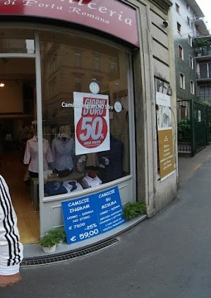
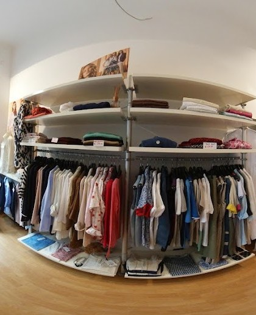

Pronta
Le camicie Ingram, uomo e donna: taglie e vestibilità pronte da indossare, di qualità.
Camicie uomo & donna · Porta Romana, Milano
Bei tessuti, occhio e cortesia. Pronta, su misura o no stiro: la camicia giusta, cucita come si deve.
Il nostro modo
Le camicie Ingram, uomo e donna: taglie e vestibilità pronte da indossare, di qualità.
Il tessuto che scegli tu, cucito sulle tue misure. Collo, polsini e vestibilità come li vuoi.
Tessuti che restano in ordine tutto il giorno: la camicia pronta anche senza ferro.
Su misura
Una camicia semi su misura nasce in tre momenti. Non è solo la taglia giusta: è il colletto che preferisci, il polsino, la vestibilità che ti sta bene addosso.
Camicia semi su misura · da 120€
I tessuti
Tinta unita, righe, quadretti, twill. Cotoni che stanno bene e durano — «bei tessuti», come dicono i clienti.

In negozio
Sotto l'insegna rossa in Via Lamarmora, una camiceria di quartiere per uomo e donna. Ci vieni per una camicia e torni per come ti trattano: «occhio, capacità, cortesia e bei tessuti».

Le parole dei clienti
Recensioni reali da Google.
Ottimo riferimento: occhio, capacità, cortesia e bei tessuti.
Mi hanno consigliato questo negozio come professionale e con prezzi accessibili.
Cordiale e disponibile, consiglio vivamente se cercate camicie.
Prodotti belli e di qualità.
Dove siamo
Domande
Sì. Scegli il tessuto, prendiamo le misure e cuciamo la camicia sul tuo corpo. Facciamo anche camicie Ingram pronte e no stiro.
Una camicia semi su misura parte da circa 120€, in base al tessuto. Le camicie pronte partono da meno.
Sì, camicie uomo e donna, pronte e su misura.
Lun–Ven 9:30–19; sabato 9:30–13 e 15–19; domenica chiuso.